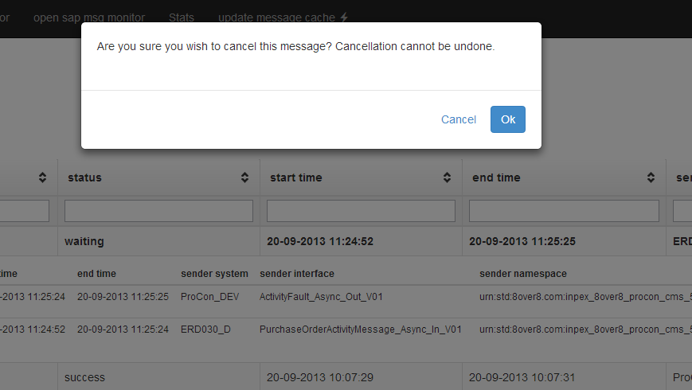

jquery-bootstrap-prettyconfirm
This is a jQuery plugin which implements a pretty confirm dialog using a twitter bootstrap modal dialog. It requires Twitter Bootstrap 3 but can easily be modified for 2 (the modals changed a bit in 3). Simply call prettyConfirm() on a jQuery collection and the plugin will kick onto action on the Click event.

Example usage:
$(".action-cancel").prettyConfirm({
"heading" : "none",
"question" : "Are you sure you wish to cancel? Cancellation cannot be undone.",
"cancelButtonTxt" : "Cancel",
"okButtonTxt" : "Ok",
"callback" : function ($elem) {
alert("Do something...");
}
});